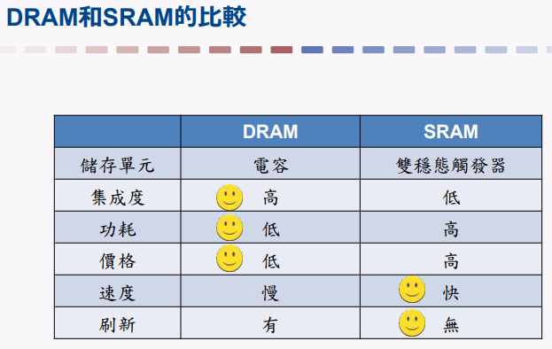
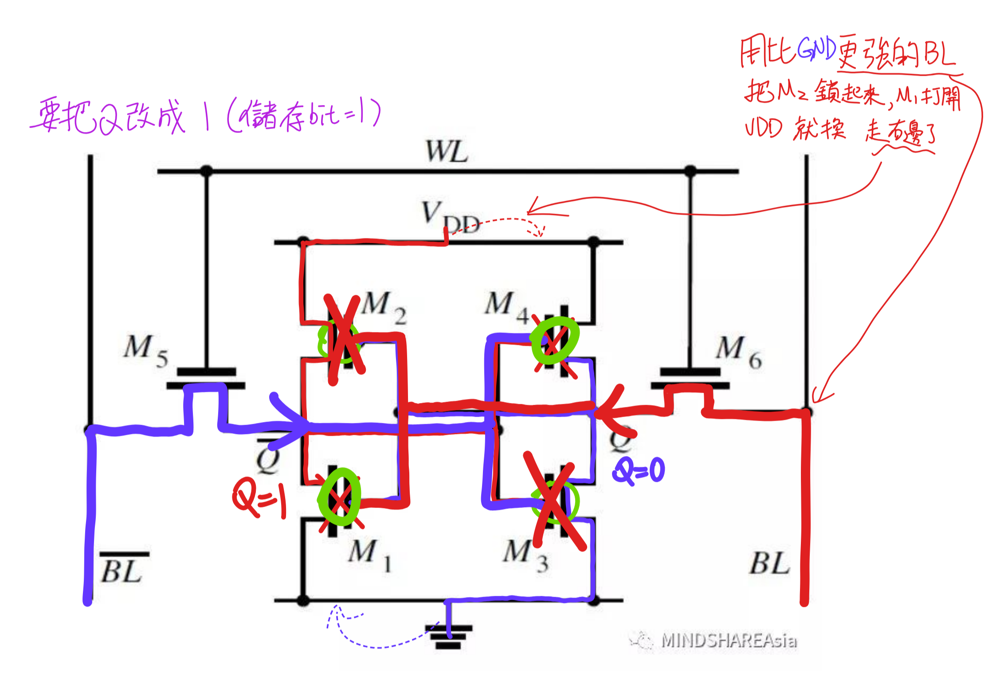

Ch 5
⭐記憶體在電腦中的角色 — 為什麼不能只說「記憶體就是 RAM」？
講義位置：PDF viewer page 3 ~ PDF viewer page 6／輔助：Chapter 5 — Memory — 3 ~ 6
1. 本輪核心問題：什麼東西算 Memory(記憶體)？
這章不是一開始就直接講 cache(快取)，而是先問一個更基本的問題：
電腦裡面，到底哪些東西有「儲存功能」？
在 Von Neumann architecture(馮·諾依曼電腦結構) 裡，講義列出五大部分：central arithmetical(運算器)、central control(控制器)、memory(記憶體)、input(輸入裝置)、output(輸出設備)。但講義特別補充：CPU 裡的 general-purpose registers(通用暫存器) 雖然屬於運算器內部，但它們也能暫時存資料，所以也可以視為一種記憶體；外部記錄介質也有儲存功能。
生活化一點講：
你的電腦不是只有一個「倉庫」。它比較像一間餐廳：
register(暫存器)像廚師手上正在拿的食材，最快，但能拿的很少。main memory(主記憶體)像廚房旁邊的食材架，容量比較大，但拿取比手上慢。disk(硬碟／SSD 類二級儲存)像地下倉庫，很多很便宜，但拿東西最慢。BIOS chip(BIOS 晶片)像開店流程手冊，開機時先用，但平常不常改寫。
所以本章的 memory(記憶體) 不是只等於 RAM，而是泛指電腦中「能保存資料或程式狀態」的元件。
2. 第一個需求：Non-volatility(非揮發性)
講義的第一個需求是：系統通電啟動時，需要執行的程式與資料要已經存在，而且斷電後不會消失。這種斷電後仍能保留資訊的記憶體稱為 non-volatile memory(非揮發性記憶體)。講義同時指出，main memory(主記憶體) 與 CPU 中的通用暫存器通常是 volatile memory(揮發性記憶體)，斷電後資料會遺失；而 BIOS 晶片與硬碟是非揮發性的，所以 CPU 通電後要先從 BIOS 開始執行，再把更多程式與資料從硬碟搬到記憶體中。
核心原理是：
電腦需要某些地方能在斷電後還記得「開機要怎麼開始」。
如果所有記憶體都像 RAM 一樣斷電就忘光，電腦一開機會完全不知道第一條指令在哪裡。
3. 第二個需求：Read/Write(可讀可寫)
講義第二個需求是：記憶體最好能 read(讀) 又能 write(寫)。主記憶體和硬碟一般都可讀可寫；BIOS 晶片雖然不是完全不能寫，但寫入需要特殊設備或特殊流程，不適合經常性寫入。
生活化例子：
- 筆記本：你可以讀以前寫的，也可以隨時改，像 RAM 或硬碟。
- 印好的說明書：你可以讀，但不方便改，像 BIOS 晶片。
所以 read/write(可讀可寫) 不是在問「能不能存資料」而已，而是在問：CPU 或系統能不能很方便地更新這份資料。
4. 第三個需求：Random Access(隨機存取)
講義第三個需求是：記憶體必須支援 random access(隨機存取)。意思是：存取任何位置的資料，時間不應該強烈依賴它在第幾個位置。講義用磁帶作為反例：如果你要聽第十首歌，必須先快轉經過前九首，這就不是隨機存取；程式執行時常常會跳到任意位置讀資料，如果記憶體不能隨機存取，效能會很差。
這裡的關鍵不是「隨便亂存」，而是：
Address(位址) 可以直接指定位置，而不是一定要從頭掃到那裡。
這對 CPU 非常重要，因為程式不是永遠照順序讀資料。像 array、pointer、function call、branch、load/store 都可能要求 CPU 去某個特定位址拿資料。
5. 第四個需求：Access Time(存取時間)
講義第四個需求是速度，也就是 access time(存取時間)。CPU 運轉很快，因此當 CPU 要資料時，最好能在很短時間內拿到；如果記憶體太慢，CPU 就會等資料，後續操作會被阻塞。講義也指出主記憶體速度明顯高於硬碟速度。
這裡有一個很重要的不變量：
CPU 不只是要資料正確，也要資料來得及。
如果 CPU 一秒可以做很多次運算，但每次都要等很慢的硬碟，它就像一個超快廚師一直站在原地等倉庫搬食材。CPU 很快也沒用，因為資料供應跟不上。
6. 為什麼講義還列出 Capacity(容量)、Cost(價格)、Power(功耗)？
PDF viewer page 5 把記憶體特性整理成：非易失性、可讀可寫、隨機存取、存取時間、容量、價格、功耗，並用 CPU 通用暫存器、主記憶體、BIOS 晶片、硬碟作為對照物件。
這其實是在鋪陳後面的 memory hierarchy(儲存層次結構)：
Danger
如果有一種記憶體同時具備：
- 斷電不消失
- 可讀可寫
- 隨機存取
- 跟 CPU 一樣快
- 容量超大
- 超便宜
- 超省電
以上是記憶體要求
那我們就不需要分層了，全部都用那一種就好。
但現實是：越快的記憶體通常越貴、容量越小；越大越便宜的儲存通常越慢。這就是後面要進入 CPU/DRAM/Disk comparison(CPU 和記憶體特性對比) 與 memory hierarchy(儲存層次結構) 的原因。
7. 本輪概念圖
flowchart TD
A["電腦需要保存程式與資料"] --> B["有哪些元件有儲存功能？"]
B --> C["CPU 內部 register(暫存器)<br>最快，但容量極小"]
B --> D["main memory(主記憶體)<br>可讀寫，速度中等"]
B --> E["BIOS chip(BIOS 晶片)<br>非揮發，但不適合常寫"]
B --> F["disk(硬碟／二級儲存)<br>容量大，斷電不消失，但慢"]
A --> G["記憶體需要哪些特性？"]
G --> H["non-volatile(非揮發性)<br>斷電後仍保留"]
G --> I["read/write(可讀可寫)<br>可讀也方便更新"]
G --> J["random access(隨機存取)<br>可直接用 address(位址) 找資料"]
G --> K["access time(存取時間)<br>資料要來得及供應 CPU"]
G --> L["capacity / cost / power<br>容量、價格、功耗"]8. 最短記法
本輪你先抓住一句話就好：
記憶體不是只有 RAM；只要能存資料或程式狀態，都可以納入記憶體／儲存系統的討論。而電腦真正想要的是：不會忘、可讀寫、能直接找、夠快、夠大、夠便宜、夠省電。
但現實中沒有一種記憶體能全部做到，所以後面才需要 memory hierarchy(儲存層次結構)。
錯題
Danger
Suppose a storage device has the following properties:
-
It can keep data after power is turned off.
-
It can be read and written.
-
To access item number 100, it must scan through items 1 to 99 first.
-
It has large capacity but slow access time.
Which memory requirement from this lecture does it fail to satisfy most directly? Explain why that requirement matters for CPU execution.
ANS:
隨機存取，因為他說要讀100 要先經過 1~99。對CPU很重要是因為如果每次都要從 1 開始會花很多時間，效率很低。
注意
他要問的是哪一個講義中提到的"記憶體要求"不符合。
⭐Memory Hierarchy — 為什麼電腦不能只用一種超大的記憶體？
講義位置：PDF viewer page 7 ~ PDF viewer page 14／輔助：Chapter 5 — Memory — 7 ~ 14
1. 本輪核心問題：CPU 太快，記憶體跟不上怎麼辦？
上一輪我們整理出理想記憶體需要：不會斷電遺失、可讀可寫、隨機存取、夠快、夠大、夠便宜、夠省電。
這一輪講義開始用數據告訴你一件事：
現實世界沒有一種記憶體同時滿足所有需求。
講義在 PDF viewer page 7 用 CPU、DRAM、Disk 的歷史資料對比速度、容量與價格。CPU 的 cycle time(週期時間)從 1980 年的 1000 ns 到 2010 年的 0.4 ns，速度進步非常快；DRAM access time(存取時間)從 375 ns 到 40 ns，雖然也變快，但遠遠追不上 CPU；Disk 的 access time 用 ms(毫秒) 當單位，和 CPU 的 ns(奈秒) 差距更大。
生活化例子：
CPU 像一個超快廚師，一秒可以切很多菜；DRAM 像廚房旁邊的冰箱；Disk 像地下倉庫。
廚師越來越快，但冰箱和倉庫送食材的速度沒有等比例變快，結果廚師常常不是在做菜，而是在等食材。
2. 為什麼 Disk(硬碟)不能直接當 CPU 的主要工作記憶體？
Disk 的優點是容量大、單位價格低、斷電不會消失；但它的缺點是太慢。講義在 PDF viewer page 7 特別強調，硬碟的 access time 單位是 ms，而 CPU 與 DRAM 的比較常用 ns；ms 和 ns 差了非常多個數量級。
所以 disk 適合當「大倉庫」，不適合直接當 CPU 每個 cycle 都要碰的工作區。
用一句話記：
Disk 很會存，但不會快。
3. 為什麼 Main Memory(主記憶體/DRAM)也不夠？
DRAM 比 disk 快很多，也可以和 CPU 直接交換資料；但 CPU 進步得更快。講義說 1980 年時 DRAM 甚至還比 CPU 需求快一些，因此不用太擔心資料供應；到了 1990 年，DRAM 速度已經比 CPU 慢，而且差距越來越大。
這就是常見的 memory wall(記憶體牆) 直覺：
CPU 很快，但它需要的資料在慢很多的記憶體裡，於是 CPU 效能被資料供應卡住。
4. Cache(快取記憶體)為什麼出現？
講義在 PDF viewer page 13 用 1980 年代 x86 CPU 的 cache 設計說明這個演化：早期 8088、80286 還不需要 cache；到了 80386，DRAM 已明顯慢於 CPU，因此用片外 SRAM 作為 cache；到了 80486，cache 被設計到 CPU 晶片內部。
這裡的核心不是背年份，而是理解因果：
flowchart TD
A["CPU 速度快速提升"] --> B["DRAM 速度跟不上"]
B --> C["CPU 等資料的時間變多"]
C --> D["加入 cache(快取記憶體)"]
D --> E["把常用資料放在更靠近 CPU、速度更快的位置"]cache(快取記憶體) 的角色像「廚師手邊的小食材盒」：
不是把整個倉庫搬到手邊，而是把最近常用、可能再用到的東西先放近一點，減少每次都跑去慢速記憶體拿資料。
5. Memory Hierarchy(儲存層次結構)的核心規則
PDF viewer page 14 把儲存層次結構整理成由上到下：
general-purpose registers(通用暫存器)：Byte 量級cache memory(快取記憶體)：KB ~ MB 量級main memory(主記憶體)：MB ~ GB 量級local secondary storage(本地二級儲存)：GB ~ TB 量級
講義給出的關鍵規則是：越往上，容量越小、速度越快、單位位元組成本越高；越往下，容量越大、速度越慢、單位位元組成本越低。
所以 Memory Hierarchy(儲存層次結構)不是隨便排列，它是在解決一個 trade-off(取捨)：
我們想讓 CPU 感覺資料很快就拿得到，同時又想讓系統真的能存很多資料，而且成本不能爆炸。
6. 最短記法
這一輪先背這句就好：
越靠近 CPU：越快、越小、越貴；越遠離 CPU：越慢、越大、越便宜。Memory Hierarchy 就是在用多層儲存，假裝我們同時擁有「很快」和「很大」。
⭐SRAM vs DRAM — 為什麼 Cache 常用 SRAM，而 Main Memory 常用 DRAM？
講義位置：PDF viewer page 15 ~ PDF viewer page 29／輔助：Chapter 5 — Memory — 15 ~ 29
1. 本輪核心問題：快與便宜為什麼不能同時拿滿？
前面我們說 memory hierarchy(儲存層次結構)的上層比較快、比較小、比較貴；下層比較慢、比較大、比較便宜。這一輪講義開始追問更底層的原因：
為什麼 cache(快取記憶體)常用 SRAM，而 main memory(主記憶體)常用 DRAM？
PDF viewer page 15 先給結論：SRAM(Static Random-access Memory，靜態隨機存取記憶體) 比較快、比較貴；DRAM(Dynamic Random-access Memory，動態隨機存取記憶體) 比較慢、比較便宜。但講義也強調，不只要背結論，還要知道為什麼。
2. SRAM(靜態隨機存取記憶體)：通電時狀態可以穩定維持
SRAM(靜態隨機存取記憶體) 的「Static(靜態)」不是指斷電後資料還在，而是指：
只要保持供電，資料狀態就能穩定維持，不需要像 DRAM 那樣週期性刷新。
所以 SRAM 仍然是 volatile memory(揮發性記憶體)：一旦斷電，資料還是會消失。這點很容易跟 ROM、Flash 混淆，考試如果問「SRAM 是不是 non-volatile(非揮發性)？」答案是 不是。
生活化例子：
SRAM 像你用手一直穩穩拿著一張牌。只要你還醒著、手還有力氣，牌就不會掉；但你睡著或斷電，牌就沒了。
3. SRAM 為什麼快？因為它用電路狀態直接維持 0/1
講義中的 SRAM 基本儲存單元用 6 個 transistor(電晶體)保存 1 bit。它可以想成兩個互相支撐的反相器，形成穩定的 0/1 狀態。讀寫時會透過 WL(word line，字元線) 控制是否連接到外部，並透過 BL/BLbar(bit line/反相位元線，位元線與反相位元線) 傳送資料。
你先不用把每個 transistor 的開關細節全部背到會畫，但要抓住三個考點：
- SRAM 一個 bit 需要較複雜的電路，常見是 6T cell(六電晶體儲存單元)。
- 因為資料由穩定電路狀態維持，所以不需要 refresh(刷新)。
- 電路複雜代表面積大、成本高、容量密度低，但速度快。
PDF viewer page 24 也收束 SRAM 的特點：速度較快，但集成度低、功耗較高、價格較高；現代 CPU 中的 cache 通常使用 SRAM。
4. SRAM 的寫入與讀取：先抓高層流程
SRAM 的寫入流程可以用這樣理解：
flowchart TD
A["外部準備要寫入的資料<br>放到 BL / BLbar"] --> B["WL(word line) 拉高"]
B --> C["M5 / M6 連通<br>儲存單元接上位元線"]
C --> D["BL / BLbar 的值推動內部電路"]
D --> E["內部形成穩定的 0 或 1"]
E --> F["WL 拉低<br>儲存單元與外部分離"]SRAM 的讀取流程則是：
flowchart TD
A["儲存單元內部已保存 0 或 1"] --> B["讀取前先準備位元線"]
B --> C["WL(word line) 拉高"]
C --> D["內部狀態影響 BL / BLbar"]
D --> E["感測電路判斷哪一邊代表 1、哪一邊代表 0"]用生活例子講，SRAM 像一個很穩的雙開關機構：
寫入時，是外部把開關推到指定狀態；讀取時，是看這組開關目前偏向哪一邊。
5. DRAM(動態隨機存取記憶體)：用電容存 0/1，所以要 refresh(刷新)
DRAM(動態隨機存取記憶體) 的「Dynamic(動態)」來自它需要週期性更新。DRAM 的基本概念是用 capacitor(電容)是否帶電來表示資料：
- 有電荷：可以代表 1
- 沒電荷：可以代表 0
問題是 capacitor(電容)會漏電。過一段時間後，原本代表 1 的電荷會慢慢流失，資料就可能錯掉。所以 DRAM 必須定期做 refresh(刷新)：把原本代表 1 的電容補電，讓資料維持住。PDF viewer page 27 明確說明電容漏電會導致資訊丟失，因此要定期 refresh。
生活化例子：
DRAM 像一個會漏水的小杯子。
杯子有水代表 1，沒水代表 0。
但杯子一直漏，所以你要定期補水，不然本來的 1 會慢慢變得看不出來。
6. DRAM 為什麼便宜、容量大，但比較慢？
DRAM 的 每個 bit 可以用很少的元件儲存 ，核心是 capacitor(電容)加上控制元件，所以 integration density(集成度) 高，也就是同樣晶片面積可以塞更多 bit。這讓 DRAM 容量大、成本低、功耗較低。
但缺點是：
- 需要 refresh(刷新)，帶來額外時間與控制成本。
- 讀取電容上的微小電荷需要 sense amplifier(感測／放大器)判斷。
- 整體速度比 SRAM 慢。
PDF viewer page 28 收束 DRAM 的特點：集成度高、功耗較低、價格較低；缺點是速度較慢、需要定時刷新；現代 PC 多用 DRAM 作為主記憶體。
7. 最終比較表：考試最常要你輸出的版本
Danger
PDF viewer page 29 用表格比較 DRAM 與 SRAM：DRAM 儲存單元是電容，SRAM 是雙穩態觸發器；DRAM 集成度高、功耗低、價格低、速度慢、需要刷新；SRAM 集成度低、功耗高、價格高、速度快、不需要刷新。
| 比較項目 | DRAM | SRAM |
|---|---|---|
| 儲存單元 | capacitor(電容) | bistable latch/flip-flop(雙穩態觸發器) |
| 速度 | 慢 | 快 |
| 集成度(同一塊晶片面積可以塞多少 bit) | 高(每個 bit 可以用很少的元件儲存) | 低 |
| 容量潛力(用合理成本、合理面積、合理功耗，能不能實際做成很大容量？) | 大 | 小 |
| 成本 | 低 | 高 |
| 功耗(以大量記憶體、同容量或每 bit 的實務成本來看) | 較低(每格小、比較省，但要一直補電) | 較高(不用補電，但每格是一組比較大的電路，所以做很多格會比較耗。) |
| 是否 refresh(刷新) | 需要 | 不需要 |
| 常見用途 | main memory(主記憶體) | cache memory(快取記憶體) |

8. 最短記法
SRAM：快、貴、小、不用 refresh，所以適合 cache。
DRAM：慢、便宜、大、要 refresh，所以適合 main memory。
再更短：
SRAM 用電路穩住資料；DRAM 用電容暫存電荷。
SRAM 結構與原理

Danger
1. 口語化小整理
6T SRAM 可以想成一個很小的「雙邊互鎖開關」。
它裡面有兩個值：
Q 和 Q̅
這兩個一定相反：
Q = 0 時，Q̅ = 1
Q = 1 時，Q̅ = 0
2. 維持資料時

假設現在存的是：
Q = 0
Q̅ = 1
那可以口語化想成：
Q 這邊被 GND 拉住，所以它維持 0。
Q̅ 這邊被 VDD 拉住，所以它維持 1。
而且這兩邊不是各自獨立維持，而是互相鎖住。
Q = 0 會讓左邊的某些開關狀態固定，讓 Q̅ 繼續被拉到 1。
Q̅ = 1 也會讓右邊的某些開關狀態固定，讓 Q 繼續被拉到 0。
所以比較口語可以說：
Q = 0被GND維持，Q̅ = 1被VDD維持，兩邊互相確認對方的狀態，所以資料會被鎖住。
3. 修改資料時

假設原本是：
Q = 0
Q̅ = 1
現在想改成：
Q = 1
Q̅ = 0
這時會打開 WL，讓外面的 BL/BL̅ 接進來。
你可以口語化記成：
WL = 1 會打開 M5/M6。
BL = 1 透過 M6 去拉高 Q。
BL̅ = 0 透過 M5 去拉低 Q̅。
所以寫入時是：
外面的
BL/BL̅進來「硬改」裡面的Q/Q̅。
但不要說「BL 電壓比 GND 大，所以一定壓過」。
比較正確是：
寫入電路夠強，所以可以暫時壓過原本 cell 裡面維持資料的力量。
也就是：
不是只比電壓大小，而是比誰比較有力。
4. 讀取資料時
讀取跟寫入剛好反過來。
寫入是：
BL/BL̅改Q/Q̅
讀取是：
Q/Q̅影響BL/BL̅
讀取前，會先把兩邊都拉高：
BL = 1
BL̅ = 1
然後：
WL = 1
這時 M5/M6 打開，cell 連到 BL/BL̅。
如果某一邊裡面存的是 0，那一邊就會有路徑通到 GND，所以那條 bitline 會被稍微拉低。
例如：
如果 Q = 0，那 BL 那邊會被稍微拉低。
如果 Q̅ = 0，那 BL̅ 那邊會被稍微拉低。
所以讀取時可以口語化說：
兩邊一開始都拉成
1，然後看哪一邊掉比較多。掉比較多的那邊，就是原本存0的那邊。
5. 最短總結
維持資料：
Q和Q̅一邊被GND拉住，一邊被VDD拉住，兩邊互相鎖住，所以資料不會自己變。
寫入資料：
WL = 1打開M5/M6，讓BL/BL̅接進來。BL/BL̅夠強時，就能把原本的Q/Q̅改掉。
讀取資料：
先把
BL和BL̅都拉成1，再打開WL。哪一邊原本接到0，哪一邊就會被GND稍微拉低。最後看哪邊掉比較多，就知道資料是0還是1。
最口語一句：
維持是自己鎖住；寫入是外面硬改裡面；讀取是裡面讓外面其中一邊稍微掉下來。
錯題
Q:
refresh 為什麼會讓 DRAM 較慢？
ANS:
因為 refresh 會佔用時間和記憶體內部資源。
DRAM 一邊要服務 CPU 的讀寫要求，一邊還要抽時間去 refresh。
所以有時候 CPU 想讀寫 DRAM，但 DRAM 正在 refresh，CPU 就可能要等一下。
因此 DRAM 的速度會被 refresh 拖慢。
SRAM 不用 refresh，所以可以比較直接地讀寫資料，速度通常比 DRAM 快。